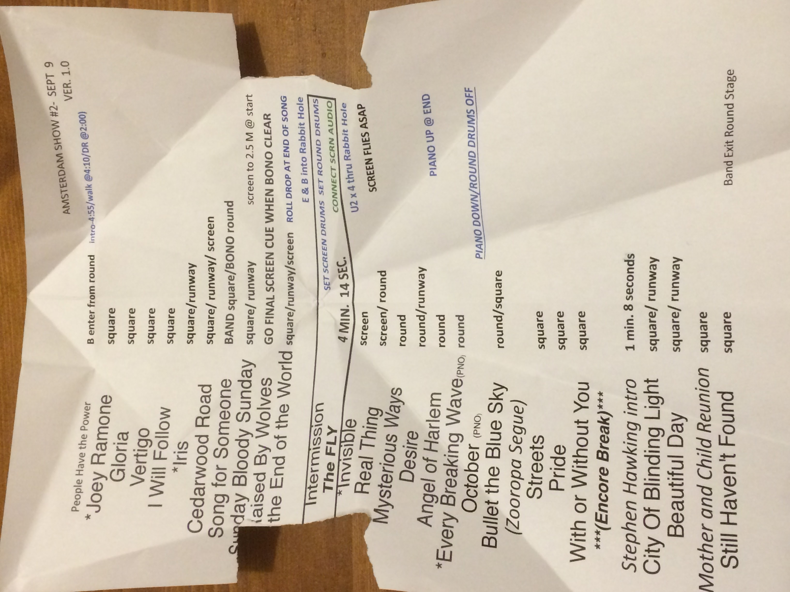
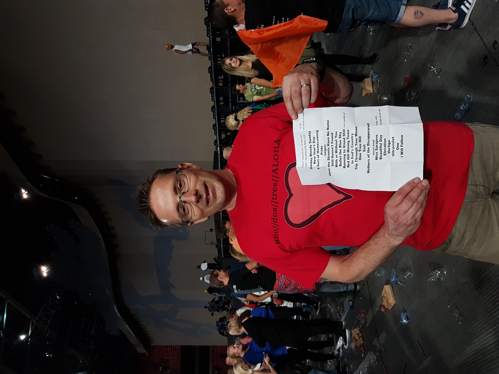
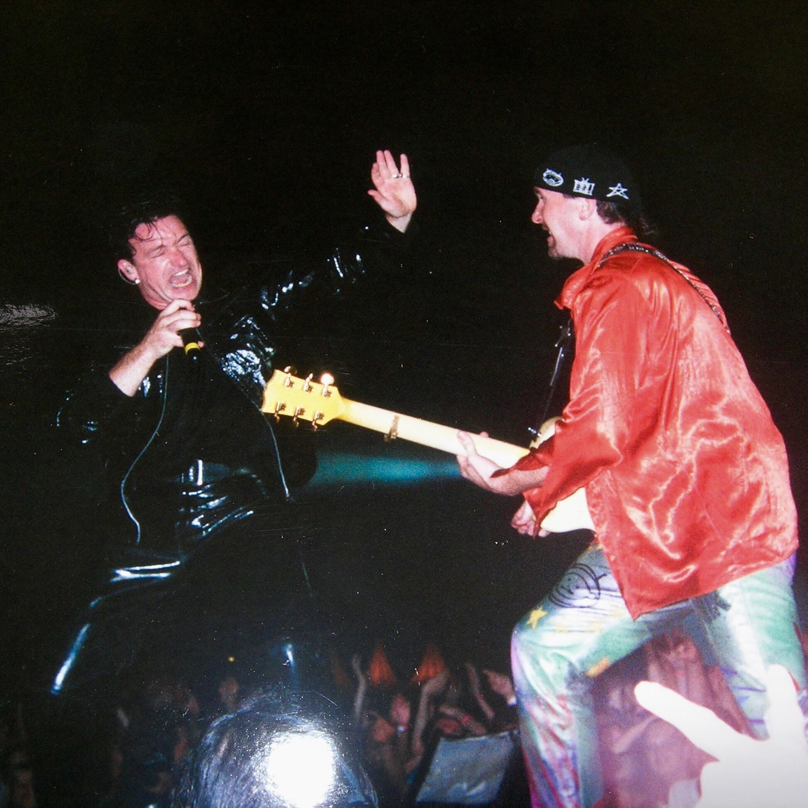
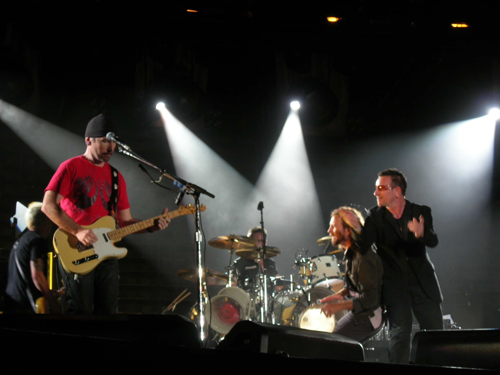

library(devtools)
devtools::install_github("vanleeuwen-hans/concertData")
library(concertData)Visual Exploration
Going beyond the basic statistics and comparison with the u2gigs.com statistics, I explored the data in a more visual manner.
Load custom concertData package
First we load my custom concertData package where I organized all the functions to analyze the U2 concert data. This R package is available on my GitHub page at: https://github.com/vanleeuwen-hans/concertData.
Load the u2data file.
# read the u2 concertData
u2data <- read_concertData_csv('u2data/u2data_all_shows_clean_final.csv')U2 shows throughout the week
Let’s see what days of the week the members of U2 prefer to play their shows. Saturday and Friday are the ones.
# get weekday counts
weekday_count <- count_shows_by_weekday(u2data)
# Extract the weekdays into a vector
weekdays <- as.character(weekday_count$weekday)
# plot data
library(ggplot2)
ggplot(data=weekday_count, aes(x=weekday, y=count)) +
geom_bar(stat="identity", fill="steelblue")+
geom_text(aes(label=count), vjust=1.6, color="white", position = position_dodge(0.9), size=3.5)+
scale_x_discrete(limits = weekdays)+
ggtitle("U2 shows throughout the week")+
theme(plot.title = element_text(hjust = 0.5))+
xlab("Day of the week") + ylab("Number of shows")
# check that weekday counts of shows counts match the number of unique shows in the data
print(sum(weekday_count$count))[1] 2209print(nrow(unique(u2data[,c('showID')])))[1] 2209U2 shows throughout the year
Let’s see what months of the year the members of U2 prefer to play their shows. The Top 3 months are November, October and May. January seems to be either too cold, or after the holiday season some start-up time is needed. In August they tend the take a well-deserved vacation.
# get monthly counts
month_counts <- count_shows_by_month(u2data)
# Extract the months into a vector
months <- as.character(month_counts$month)
# plot number of shows by month
ggplot(data=month_counts, aes(x=month, y=count)) +
geom_bar(stat="identity", fill="steelblue")+
geom_text(aes(label=count), vjust=1.6, color="white", position = position_dodge(0.9), size=3.5)+
scale_x_discrete(limits = months)+
ggtitle("U2 shows throughout the year")+
theme(plot.title = element_text(hjust = 0.5))+
xlab("Month") + ylab("Number of shows")
# check that month counts of shows counts match the number of unique shows in the data
print(sum(month_counts$count))[1] 2209print(nrow(unique(u2data[,c('showID')])))[1] 2209U2 shows over the decades
The 80s was definitely the decade where U2 was most active with regards to touring!
# get decade counts
decade_counts <- count_shows_by_decade(u2data)
# Extract the decades into a vector
decades <- as.character(decade_counts$decade)
# plot number of shows by decade
ggplot(data=decade_counts, aes(x=decade, y=count)) +
geom_bar(stat="identity", fill="steelblue")+
geom_text(aes(label=count), vjust=1.6, color="white", position = position_dodge(0.9), size=3.5)+
scale_x_discrete(limits = decades)+
ggtitle("U2 shows over the decades")+
theme(plot.title = element_text(hjust = 0.5))+
xlab("Decade") + ylab("Number of shows")
# check that decade counts of shows counts match the number of unique shows in the data
print(sum(decade_counts$count))[1] 2209print(nrow(unique(u2data[,c('showID')])))[1] 2209Opening and Closing songs
Zoo Station and 40 win by far as opening and closing songs, respectively. Interesting anecdote, when I asked my wife what was the top opening song she was convinced it was Vertigo as she remembered that almost all Vertigo Tour shows opened with that song. When we inspected the different legs of that tour we saw that it was not Vertigo but City of Blinding Lights that mostly opened. Of course, the memory is biased towards the shows that we attended. That’s why it was good to have the data at hand to show the overall picture. Note: snippets were excluded from this analysis.
The first table below shows the top 3 opening songs for each tour, while the second table below shows the top opening song all time, for each year since 1976. Note that in some of these years there were no tours but a perhaps a few small shows or TV appearances. To come back to the Vertigo example, in that second table you can see that City of Blinding Lights opened 86 shows of the Vertigo Tour while Vertigo opened 36 shows.
# load libraries
library(ggplot2)
# Get top 10 opening songs
opening_songs <- find_most_played_opening_songs(u2data, n = 10)
# Visualize opening songs
ggplot(opening_songs, aes(x = reorder(song_title, times_played), y = times_played)) +
geom_bar(stat = "identity", fill = "skyblue") +
coord_flip() +
theme_minimal() +
labs(title = "Most Common U2 Opening Songs",
x = "Song",
y = "Number of Times Used as Opener") +
theme(axis.text.y = element_text(size = 10))
# Get top 10 closing songs
closing_songs <- find_most_played_closing_songs(u2data, n = 10)
# Visualize closing songs
ggplot(closing_songs, aes(x = reorder(song_title, times_played), y = times_played)) +
geom_bar(stat = "identity", fill = "indianred") +
coord_flip() +
theme_minimal() +
labs(title = "Most Common U2 Closing Songs",
x = "Song",
y = "Number of Times Used as Closer") +
theme(axis.text.y = element_text(size = 10))
# Get top 3 opening songs per tour
top_3_openers_by_tour <- find_most_played_opening_songs_by_tour(u2data, top_n = 3)
# Print results
head(top_3_openers_by_tour, n = nrow(top_3_openers_by_tour)) tour
1 U2 U2:UV Achtung Baby Live at the Sphere
2 U2 Stories of Surrender Tour
3 U2 Stories of Surrender Tour
4 U2 Stories of Surrender Tour
5 U2 Joshua Tree Tour 2019
6 U2 Experience + Innocence Tour
7 U2 Experience + Innocence Tour
8 U2 Songs Of Experience Promo Tour
9 U2 Songs Of Experience Promo Tour
10 U2 Songs Of Experience Promo Tour
11 U2 Joshua Tree Tour 2017
12 U2 Innocence + Experience Tour
13 U2 Songs Of Innocence Promo Tour
14 U2 Songs Of Innocence Promo Tour
15 U2 Songs Of Innocence Promo Tour
16 U2 360° Tour
17 U2 360° Tour
18 U2 360° Tour
19 U2 No Line On The Horizon Promo Tour
20 U2 No Line On The Horizon Promo Tour
21 U2 No Line On The Horizon Promo Tour
22 U2 Vertigo Tour
23 U2 Vertigo Tour
24 U2 Vertigo Tour
25 U2 How To Dismantle An Atomic Bomb Promo Tour
26 U2 How To Dismantle An Atomic Bomb Promo Tour
27 U2 How To Dismantle An Atomic Bomb Promo Tour
28 U2 Elevation Tour
29 U2 Elevation Tour
30 U2 All That You Can't Leave Behind Promo Tour
31 U2 All That You Can't Leave Behind Promo Tour
32 U2 All That You Can't Leave Behind Promo Tour
33 U2 PopMart Tour
34 U2 ZOO TV Tour
35 U2 Lovetown Tour
36 U2 Lovetown Tour
37 U2 Lovetown Tour
38 U2 Joshua Tree Tour
39 U2 Joshua Tree Tour
40 U2 Joshua Tree Tour
41 U2 Conspiracy Of Hope
42 U2 Conspiracy Of Hope
43 U2 Unforgettable Fire Tour
44 U2 Unforgettable Fire Tour
45 U2 Unforgettable Fire Tour
46 U2 War Tour
47 U2 War Tour
48 U2 War Tour
49 U2 October Tour
50 U2 October Tour
51 U2 October Tour
52 U2 Boy Tour
53 U2 Boy Tour
54 U2 Boy Tour
55 U2 11 O'Clock Tick Tock Tour
56 U2 11 O'Clock Tick Tock Tour
57 U2 Early Days
58 U2 Early Days
59 U2 Early Days
60 U2 Various Dates
61 U2 Various Dates
62 U2 Various Dates
song_title times_played
1 Zoo Station 40
2 City of Blinding Lights 27
3 Stories of Surrender 11
4 Vertigo 2
5 Sunday Bloody Sunday 15
6 The Blackout 33
7 Love Is All We Have Left 27
8 American Soul 1
9 Beautiful Day 1
10 Get Out Of Your Own Way 1
11 Sunday Bloody Sunday 51
12 The Miracle (of Joey Ramone) 76
13 The Miracle (of Joey Ramone) 8
14 Every Breaking Wave 3
15 Beautiful Day 1
16 Breathe 43
17 Return of the Stingray Guitar 33
18 Beautiful Day 3
19 Get on Your Boots 10
20 Breathe 2
21 Magnificent 2
22 City of Blinding Lights 86
23 Vertigo 36
24 Love and Peace or Else 9
25 Vertigo 6
26 All Because Of You 1
27 Original Of The Species 1
28 Elevation 112
29 Beautiful Day 1
30 Beautiful Day 8
31 Elevation 6
32 Stuck in a Moment You Can't Get Out Of 1
33 Mofo 93
34 Zoo Station 156
35 Where the Streets Have No Name 24
36 Bullet the Blue Sky 10
37 Hawkmoon 269 8
38 Where the Streets Have No Name 87
39 Stand By Me 18
40 Bullet the Blue Sky 4
41 MLK 5
42 C'mon Everybody 1
43 11 O'Clock Tick Tock 87
44 Gloria 13
45 Out of Control 4
46 Out of Control 53
47 Gloria 40
48 Surrender 2
49 Gloria 75
50 With a Shout (Jerusalem) 3
51 11 O'Clock Tick Tock 2
52 The Ocean 57
53 I Will Follow 15
54 11 O'Clock Tick Tock 13
55 11 O'Clock Tick Tock 10
56 I Will Follow 1
57 Out of Control 13
58 Concentration Cramp 7
59 2-4-6-8 Motorway 6
60 One 14
61 Vertigo 9
62 Desire 7# get top opening song by year
opening_timeline <- find_most_played_opening_song_by_year(u2data)
head(opening_timeline, n = nrow(opening_timeline)) year song_title times_played
1 1976 Show Me The Way 1
2 1977 2-4-6-8 Motorway 1
3 1977 Batman Theme 1
4 1977 Don't Believe A Word 1
5 1977 Jumpin' Jack Flash 1
6 1977 Show Me The Way 1
7 1978 2-4-6-8 Motorway 5
8 1979 Out of Control 10
9 1980 11 O'Clock Tick Tock 27
10 1981 Gloria 46
11 1981 The Ocean 46
12 1982 Gloria 30
13 1983 Gloria 41
14 1984 11 O'Clock Tick Tock 30
15 1985 11 O'Clock Tick Tock 57
16 1986 MLK 5
17 1987 Where the Streets Have No Name 88
18 1988 When Love Comes To Town 2
19 1989 Where the Streets Have No Name 22
20 1990 Where the Streets Have No Name 2
21 1992 Zoo Station 103
22 1993 Zoo Station 54
23 1994 One Love 1
24 1995 I Feel Good 1
25 1995 Miss Sarajevo 1
26 1995 The Cross 1
27 1995 Two Shots of Happy, One Shot of Sad 1
28 1996 Tower Of Song 1
29 1997 Mofo 79
30 1998 Mofo 15
31 1999 New Day 3
32 2000 Beautiful Day 8
33 2001 Elevation 112
34 2002 American Prayer 1
35 2002 Beat On The Brat 1
36 2002 Beautiful Day 1
37 2002 Because The Night 1
38 2002 It's Only Rock 'n' Roll (But I Like It) 1
39 2002 One 1
40 2002 The Hands That Built America 1
41 2002 Walk On 1
42 2002 When The Stars Go Blue 1
43 2003 Falling At Your Feet 3
44 2003 The Hands That Built America 3
45 2004 Vertigo 6
46 2005 City of Blinding Lights 69
47 2006 City of Blinding Lights 20
48 2007 Don't Give Up (Africa) 1
49 2007 Redemption Song 1
50 2007 Stay (Faraway, So Close!) 1
51 2007 Vertigo 1
52 2007 Wave of Sorrow (Birdland) 1
53 2008 All You Need Is Love 2
54 2009 Breathe 47
55 2010 Return of the Stingray Guitar 32
56 2011 Beautiful Day 3
57 2012 Angel of Harlem 1
58 2012 Carrickfergus 1
59 2012 Christmas (Baby, Please Come Home) 1
60 2012 Help 1
61 2012 I've Got You Under My Skin 1
62 2012 Improvisation With Tinariwen 1
63 2012 Mensch 1
64 2012 Night And Day 1
65 2012 The Auld Triangle 1
66 2012 Walk On 1
67 2012 Where Or When 1
68 2013 Stand By Me 2
69 2013 Sunday Bloody Sunday 2
70 2014 The Miracle (of Joey Ramone) 8
71 2015 The Miracle (of Joey Ramone) 77
72 2016 Because The Night 1
73 2016 Desire 1
74 2016 I Still Haven't Found What I'm Looking For 1
75 2016 If It Be Your Will 1
76 2016 Pride (In the Name of Love) 1
77 2016 The People In Your Neighborhood 1
78 2016 Vertigo 1
79 2017 Sunday Bloody Sunday 52
80 2018 The Blackout 33
81 2019 Sunday Bloody Sunday 15
82 2020 Happy Xmas (War Is Over) 1
83 2020 Larry O'gaff's Set 1
84 2020 Stairway To Heaven 1
85 2021 In My Life 1
86 2021 Running To Stand Still 1
87 2021 We Are The People 1
88 2022 City of Blinding Lights 14
89 2023 Zoo Station 25
90 2024 Zoo Station 15Set-list variability across tours
Here are two examples of a U2 set list, from the Innocence + Experience Tour (2015) and the Joshua Tree Tour (2017), both in Amsterdam. These set-lists are actually used by the band during the show and the crew members give them to the fans after the show, sometimes.

Data preparation for set-list variability analysis
Now we get to one of the main objectives of this project: how variable, or fixed, are the U2 set-lists? Let’s start with data preparation and calculations before we create several plots.
# read the u2 concertData
u2data <- read_concertData_csv('u2data/u2data_all_shows_clean_final.csv')
# List of tours to exclude as this analysis focuses on the regular tours done after a U2 album release.
excluded_tours <- c(
"U2 Stories of Surrender Tour",
"U2 Songs Of Experience Promo Tour",
"U2 Songs Of Innocence Promo Tour",
"U2 No Line On The Horizon Promo Tour",
"U2 How To Dismantle An Atomic Bomb Promo Tour",
"U2 All That You Can't Leave Behind Promo Tour",
"U2 Conspiracy Of Hope",
"U2 11 O'Clock Tick Tock Tour",
"U2 Early Days",
"U2 Various Dates"
)Average number of songs per show
In the early days the U2 concerts were much shorter, for example after the launch of their first album ‘Boy’ the average numbers of songs played at their concerts was about 10. In more recent tours the number is somewhere between 22 and 25. As mentioned on the Basic Statistics U2 Concerts page, I was lucky to have attended one of the longest shows ever: 27 songs played.
# get required package
library(ggplot2)
# create data frame without excluded tours
data_selected_tours <- concertData_remove_tours(u2data, excluded_tours)
# remove shows without setlist
data_inc_snippets <- concertData_remove_showsNoSetlist(data_selected_tours)
# Get tours ordered chronologically
tour_order <- tour_order_by_date(data_inc_snippets, ascending = FALSE)
# Calculate tour-level statistics
tour_stats <- calculate_comprehensive_tour_statistics(data_inc_snippets, tour_order)
# Average Songs per Show
ggplot(tour_stats, aes(x = tour, y = avg_songs_per_show)) +
geom_col(fill = "blue") +
geom_text(aes(label = round(avg_songs_per_show, 1)),
vjust = 2, size = 3) +
theme_minimal() +
theme(axis.text.x = element_text(angle = 45, hjust = 1)) +
labs(title = "Average Number of Songs per Show",
x = "Tour",
y = "Average Number of Songs")
Number of shows per tour
The longest tour with most shows ever was the ZOO TV Tour in 1992-1993. That tour consisted of 5 legs and a total of 156 shows. That was the first tour when I saw U2 live, below a picture I took at the front rail in Nijmegen on August 3, 1993.

If you want to see a visual of the number of shows per tour aspect, layered on the world map, you can check out the U2 Tour Map Shiny app that I developed as part of this project.
# get required package
library(ggplot2)
# create data frame without excluded tours
data_selected_tours <- concertData_remove_tours(u2data, excluded_tours)
# remove shows without setlist
data_inc_snippets <- concertData_remove_showsNoSetlist(data_selected_tours)
# Get tours ordered chronologically
tour_order <- tour_order_by_date(data_inc_snippets, ascending = FALSE)
# Calculate tour-level statistics
tour_stats <- calculate_comprehensive_tour_statistics(data_inc_snippets, tour_order)
# Number of Shows per Tour
ggplot(tour_stats, aes(x = tour, y = total_shows)) +
geom_col(fill = "red") +
geom_text(aes(label = total_shows),
vjust = 2, size = 3) +
theme_minimal() +
theme(axis.text.x = element_text(angle = 45, hjust = 1)) +
labs(title = "Number of Shows per Tour",
x = "Tour",
y = "Number of Shows")
Number of unique songs per tour
The more unique songs U2 plays during a tour the better for the fans who go to many shows. Like this we hope to hear the songs they do not play that often. For example, when we were in Honolulu, Hawaii, for the last show of the Vertigo Tour, they played ‘Rockin’ in the Free World’, together with Pearl Jam. That was a big party, or as Bono said: ‘A tribal gathering of the faithful, celebrity love island, beach party’ 😁 🏖️ See my summary/compilation video on YouTube.

If we look at the graph we see that the 360° Tour had most unique songs played. There seems to be a correlation with the number of shows in the tour, but more about that further down.
# get required package
library(ggplot2)
# create data frame without excluded tours
data_selected_tours <- concertData_remove_tours(u2data, excluded_tours)
# remove shows without setlist
data_inc_snippets <- concertData_remove_showsNoSetlist(data_selected_tours)
# Get tours ordered chronologically
tour_order <- tour_order_by_date(data_inc_snippets, ascending = FALSE)
# Calculate tour-level statistics
tour_stats <- calculate_comprehensive_tour_statistics(data_inc_snippets, tour_order)
# Unique Songs per Tour
ggplot(tour_stats, aes(x = tour, y = total_unique_songs)) +
geom_col(fill = "purple") +
geom_text(aes(label = total_unique_songs),
vjust = 2, size = 3) +
theme_minimal() +
theme(axis.text.x = element_text(angle = 45, hjust = 1)) +
labs(title = "Number Unique Songs per Tour",
x = "Tour",
y = "Number of Unique Songs")
Number of unique snippets per tour
Snippets are short pieces of songs that are mixed into a regular song performance. These snippets can be from U2 songs or from any other artist. A well-know and loved snippet among U2 fans is ‘Shine like stars’ which is sometimes played at the end of ’With or without You”, for example here in this Joshua Tree concert in 1987. In the graph we see that the 360° Tour did not only have the most number of unique songs, but also the most number of unique snippets.
# get required package
library(ggplot2)
# create data frame without excluded tours
data_selected_tours <- concertData_remove_tours(u2data, excluded_tours)
# remove shows without setlist
data_inc_snippets <- concertData_remove_showsNoSetlist(data_selected_tours)
# Get tours ordered chronologically
tour_order <- tour_order_by_date(data_inc_snippets, ascending = FALSE)
# Calculate tour-level statistics
tour_stats <- calculate_comprehensive_tour_statistics(data_inc_snippets, tour_order)
# Unique Snippets per Tour
ggplot(tour_stats, aes(x = tour, y = total_unique_snippets)) +
geom_col(fill = "orange") +
geom_text(aes(label = total_unique_snippets),
vjust = 2, size = 3) +
theme_minimal() +
theme(axis.text.x = element_text(angle = 45, hjust = 1)) +
labs(title = "Number of Unique Snippets per Tour",
x = "Tour",
y = "Number of Unique Snippets")
Correlation between number of shows and number of songs/snippets
In the correlation plot below we see a moderate positive correlation between the number shows played during a tour and the number of unique songs and snippets played during a tour. About 21% (0.462² = 0.213) of the variation in unique songs can be explained by the number of shows, and about 16% (0.398² = 0.158) of the variation in unique snippets can be explained by the number of shows. Thus, there is a pattern, but it’s not very strong - having more shows somewhat predicts having more unique songs and more unique snippets performed.
# get required packages
library(ggplot2)
# create data frame without excluded tours
data_selected_tours <- concertData_remove_tours(u2data, excluded_tours)
# remove shows without setlist
data_inc_snippets <- concertData_remove_showsNoSetlist(data_selected_tours)
# Get tours ordered chronologically
tour_order <- tour_order_by_date(data_inc_snippets, ascending = FALSE)
# Calculate tour-level statistics
tour_stats <- calculate_comprehensive_tour_statistics(data_inc_snippets, tour_order)
# Analyze correlation between number of shows and unique songs / snippets
tour_correlation_data <- calculate_tour_correlation_data(tour_stats)
# Calculate correlations
correlations <- summarise(
tour_stats,
songs_correlation = cor(total_shows, total_unique_songs),
snippets_correlation = cor(total_shows, total_unique_snippets)
)
# Create plot
ggplot(tour_correlation_data,
aes(x = total_shows, y = unique_count)) +
geom_point(aes(color = tour), size = 3) +
geom_smooth(method = "lm", se = TRUE, color = "blue") +
facet_wrap(~ metric_type, scales = "free_y") +
theme_minimal() +
labs(
title = "Correlation: Number of Shows vs Unique Songs/Snippets",
x = "Number of Shows",
y = "Number of Unique Songs/Snippets"
) +
theme(legend.position = "right") +
geom_text(data = data.frame(
metric_type = "Unique Songs",
x = Inf,
y = Inf,
label = sprintf("Correlation: %.3f", correlations$songs_correlation)
), aes(x = x, y = y, label = label),
hjust = 1, vjust = 1, size = 3, inherit.aes = FALSE) +
geom_text(data = data.frame(
metric_type = "Unique Snippets",
x = Inf,
y = Inf,
label = sprintf("Correlation: %.3f", correlations$snippets_correlation)
), aes(x = x, y = y, label = label),
hjust = 1, vjust = 1, size = 3, inherit.aes = FALSE)
Distribution of song frequencies by tour
The plot below gives a visual indication of how often songs are played within a tour.
# create data frame without excluded tours
data_selected_tours <- concertData_remove_tours(u2data, excluded_tours)
# remove shows without setlist
data_inc_snippets <- concertData_remove_showsNoSetlist(data_selected_tours)
# remove snippets
data_no_snippets <- concertData_remove_snippets(data_inc_snippets)
# Get tours ordered chronologically
tour_order <- tour_order_by_date(data_no_snippets, ascending = FALSE)
# Calculate tour-level statistics
tour_stats <- calculate_comprehensive_tour_statistics(data_inc_snippets, tour_order)
# Calculate song frequency across tours
song_frequency <- calculate_song_frequency_across_tours(data_no_snippets, tour_stats, tour_order)
# Song Frequency Distribution
ggplot(song_frequency, aes(x = song_frequency, y = tour)) +
geom_boxplot(outlier.shape = NA, fill = "lightgrey") +
geom_jitter(aes(color = tour), height = 0.2, alpha = 0.4) +
theme_minimal() +
theme(
legend.position = "none",
axis.text.y = element_text(size = 8)
) +
labs(title = "Distribution of Song Frequencies by Tour",
subtitle = "How often are different songs played within each tour?",
caption = "Box shows 25th-75th percentiles, bold line is median\nPoints show individual songs, shifted left/right by frequency\nWider spread indicates more variation in how often songs are played",
x = "Song Frequency (Proportion of shows that a song is played)",
y = "Tour")
Overall set-list variability by tour
In this analysis one overall variability score was calculated for each tour based on the variability of the set-lists in all the shows of that tour. The values were normalized with the tour having the highest set-list variability getting a score of 1.0. As we can see that is the 360° Tour, which also had the highest number of unique songs and snippets played. The Joshua Tree Tour 2017-2019 scored the lowest. This can partly be explained by the fact that U2 started playing those shows by playing the full Joshua Tree album with the songs always in the order as on the original album.
# create data frame without excluded tours
data_selected_tours <- concertData_remove_tours(u2data, excluded_tours)
# remove shows without setlist
data_inc_snippets <- concertData_remove_showsNoSetlist(data_selected_tours)
# remove snippets
data_no_snippets <- concertData_remove_snippets(data_inc_snippets)
# Get tours ordered chronologically
tour_order <- tour_order_by_date(data_no_snippets, ascending = FALSE)
# Calculate tour-level statistics
tour_stats <- calculate_comprehensive_tour_statistics(data_inc_snippets, tour_order)
# Create a normalized version of overall_variability (0-1 scale)
# and add to tour_stats data in new data frame
max_overall_var <- max(tour_stats$overall_variability)
tour_stats_extended <- mutate(tour_stats,
normalized_variability = overall_variability / max_overall_var)
# plot overall variability of tours, with normalized values
ggplot(tour_stats_extended, aes(x = tour)) +
# Bar for normalized variability
geom_col(aes(y = normalized_variability), fill = "darkgreen", alpha = 0.5) +
# Bar outline for actual variability
geom_col(aes(y = overall_variability / max_overall_var), fill = NA) +
# Add labels for both actual and normalized values
geom_text(aes(y = normalized_variability,
label = sprintf("%.2f", normalized_variability)),
vjust = 2, size = 3) +
theme_minimal() +
theme(axis.text.x = element_text(angle = 45, hjust = 1)) +
labs(title = "Overall Setlist Variability by Tour",
subtitle = "Higher values mean more variability in the setlists of that tour",
x = "Tour",
y = "Variability Score") +
coord_cartesian(ylim = c(0, 1.1)) # Set y-axis limit with some padding for labels
Set-list variability heatmap
Besides the overall variability score by tour, we can see in the analysis and plot below the variability across the set-list song positions within a tour. Here we can indeed see the block of conserved songs at the start of the Joshua Tree Tour 2017-2019 shows. But we see similar conserved blocks in other tours, for example the ZOO TV Tour, Innocence + Experience Tour, and the latest U2:UV Achtung Baby Live shows in the Sphere, Las Vegas.
This plot gives a very nice picture of the set-list variability within and across tours, a topic very often discussed by U2 fans as I mentioned on the Asking the Right Questions page of this report. Now with the data in hand and this visualization it is possible to have a more objective view.
# create data frame without excluded tours
data_selected_tours <- concertData_remove_tours(u2data, excluded_tours)
# remove shows without setlist
data_inc_snippets <- concertData_remove_showsNoSetlist(data_selected_tours)
# remove snippets
data_no_snippets <- concertData_remove_snippets(data_inc_snippets)
# Get tours ordered chronologically
tour_order <- tour_order_by_date(data_no_snippets, ascending = FALSE)
# Calculate tour-level statistics
tour_stats <- calculate_comprehensive_tour_statistics(data_inc_snippets, tour_order)
# Create a normalized version of overall_variability (0-1 scale)
# and add to tour_stats data in new data frame
max_overall_var <- max(tour_stats$overall_variability)
tour_stats_extended <- mutate(tour_stats,
normalized_variability = overall_variability / max_overall_var)
# Calculate max songs for each tour
max_songs_by_tour <- longest_setlist_by_tour(data_no_snippets)
# Analyze Song Positions in Setlists
position_analysis <- analyze_song_positions(data_no_snippets, max_songs_by_tour, tour_order)
# plot graph
ggplot() +
geom_tile(data = position_analysis,
aes(x = position_bin, y = tour, fill = variability)) +
geom_text(data = tour_stats_extended,
aes(x = max(position_analysis$position_bin),
y = tour,
label = sprintf("%.2f", normalized_variability)),
size = 2,
color = "black",
hjust = -0.2) +
scale_fill_gradient(low = "red", high = "blue") +
scale_x_continuous(
breaks = seq(1, max(position_analysis$position_bin), by = 2),
labels = seq(1, max(position_analysis$position_bin), by = 2)
) +
theme_minimal() +
theme(
axis.text.x = element_text(angle = 45, hjust = 1),
axis.text.y = element_text(size = 6)
) +
labs(title = "Setlist Variability by Tour",
subtitle = "How predictable is each song position across different shows?",
caption = paste("Colors indicate variability: Red = highly predictable, Blue = highly variable\n",
"Text annotations show normalized tour variability (unique songs / avg songs per show)"),
x = "Song Position in Show",
y = "Tour",
fill = "Variability\n(0-1 scale)")
World maps of U2 concerts locations
There are two areas in the world where U2 fans have noting too complain with reagrds to the number of concerts they get. However, there are other countries where they hardly ever come or not at all. Use the following visualizations to check this out.
Data pre-processing for world maps
First the data was prepared for geographical visualizations. This means that we had to find the coordinates on planet Earth for the cities where U2 played their shows. In addition, a transformation of the data was done to display show counts by frequency.
# read the u2 concertData
u2data <- read_concertData_csv('u2data/u2data_all_shows_clean_final.csv')
# get unique shows from concert data fram
unique_shows <- extract_unique_shows(u2data)
# Process unique locations
unique_locations <- get_concert_locations(unique_shows)
# Initialize geocoded_cities
geocoded_cities <- NULL
# File path for geocoded cities
geocoded_file_path <- "u2data/geocoded_cities.csv"
# Check if file with geocodes exists and read it if it does
# If file does not exist yet lookup the geocode for each location
# and write to file for future use (avoiding time consuming geocode lookup)
geocoded_cities <- geocode_cities(geocoded_file_path, unique_locations)
# Create frequency counts for cities
city_frequency <- create_city_frequency(unique_shows, geocoded_cities)
# transform city counts and use bins
# for example cities with 1 sow, 2-5 shows, 6-10 shows, 11-25 shows,
# 26-50 shows, 51-100 shows, or cities with 100+ shows
breaks <- c(0, 1, 5, 10, 25, 50, 100, Inf)
city_frequency_transformed <- transform_city_frequency(city_frequency, breaks)
# Create decade-based frequency
city_by_decade <- create_decade_frequency(unique_shows, geocoded_cities)
# Create validation report
validation <- tryCatch({
list(
total_shows = n_distinct(u2data$showID),
processed_shows = nrow(unique_shows),
unique_cities = n_distinct(u2data$city),
unique_countries = n_distinct(u2data$country),
unique_tours = n_distinct(u2data$tour),
cities_with_coords = sum(!is.na(geocoded_cities$lat)),
total_song_performances = nrow(u2data),
shows_missing_setlist = sum(is.na(u2data$song_title)),
total_shows_in_frequency = sum(city_frequency$show_count)
)
}, error = function(e) {
stop(paste("Error creating validation report:", e$message))
})
# Print validation report with additional checks
print("Data Validation Report:")[1] "Data Validation Report:"print(validation)$total_shows
[1] 2209
$processed_shows
[1] 2209
$unique_cities
[1] 410
$unique_countries
[1] 49
$unique_tours
[1] 26
$cities_with_coords
[1] 413
$total_song_performances
[1] 39653
$shows_missing_setlist
[1] 298
$total_shows_in_frequency
[1] 2209# Additional validation checks
if (validation$total_shows != validation$processed_shows) {
warning(sprintf("Mismatch in show counts: %d total vs %d processed",
validation$total_shows, validation$processed_shows))
}
if (validation$total_shows != validation$total_shows_in_frequency) {
warning(sprintf("Mismatch in frequency counts: %d total vs %d in frequency table",
validation$total_shows, validation$total_shows_in_frequency))
}World map using log scale and intensity
In this world map we see the places where U2 played, and how often, since they started in the late seventies of the previous century.
# Using a log scale for the size/color intensity
# libraries
library(ggplot2)
library(maps)
# create map
world_map <- map_data("world")
# Create date range string for subtitle
date_range <- paste(
format(min(city_frequency_transformed$first_show), "%B %Y"),
"to",
format(max(city_frequency_transformed$last_show), "%B %Y")
)
# create plot
world_map <- ggplot() +
# Base world map
geom_polygon(data = world_map,
aes(x = long, y = lat, group = group),
fill = "lightgray", color = "white") +
# Add points for each city
geom_point(data = city_frequency_transformed,
aes(x = long, y = lat,
size = show_category,
color = show_category),
alpha = 0.7) +
# Customize the appearance
scale_size_discrete(range = c(2, 8)) +
scale_color_brewer(palette = "YlOrRd") +
guides(
color = guide_legend(
title = "Number of Shows",
override.aes = list(size = c(2, 3, 4, 5, 6, 7, 8)) # Make legend dots increase in size
),
size = "none" # Hide separate size legend
) +
theme_minimal() +
labs(title = "U2 Concert Locations Worldwide",
subtitle = date_range,
x = "Longitude",
y = "Latitude") +
theme(legend.position = "right") +
# Adjust the map proportions
coord_fixed(1.3)
# print plot
print(world_map)
World map by decades
Here we see the break down by decades: where and how often did they play in each decade since they started.
# Create decade-based maps
# Libraries
library(ggplot2)
library(maps)
library(RColorBrewer)
# Create world map base
world_map <- map_data("world")
# Create visualization
decades_plot <- ggplot(data = city_by_decade) +
geom_polygon(data = world_map,
aes(x = long, y = lat, group = group),
fill = "lightgray", color = "white") +
geom_point(aes(x = long, y = lat,
size = show_count,
color = show_count),
alpha = 0.7) +
scale_size_continuous(name = "Number of shows",
range = c(2, 8)) +
scale_color_gradientn(name = "Number of shows",
colors = brewer.pal(9, "YlOrRd")) +
facet_wrap(~decade) +
theme_minimal() +
labs(title = "U2 Concert Locations by Decade",
x = "Longitude",
y = "Latitude") +
guides(color = guide_legend(order = 1),
size = guide_legend(order = 1)) +
theme(legend.position = "right",
legend.box = "horizontal") +
coord_fixed(1.3,
xlim = c(-180, 180),
ylim = c(-60, 90))
print(decades_plot)
World map with zoom and popups using leaflet
With the leaflet package we have a world map here where you can zoom in and out, and you can click on the cities to see more info!
# load libraries
library(ggplot2)
library(maps)
library(leaflet)
library(dplyr)
library(viridis)
# Prepare the popup content
city_frequency_transformed <- city_frequency_transformed %>%
mutate(
popup_content = sprintf(
'<div class="popup-content">
<h3>%s, %s</h3>
<table>
<tr><td><b>Shows:</b></td><td>%d</td></tr>
<tr><td><b>First show:</b></td><td>%s</td></tr>
<tr><td><b>Last show:</b></td><td>%s</td></tr>
<tr><td><b>Venues:</b></td><td>%s</td></tr>
<tr><td><b>Tours:</b></td><td>%s</td></tr>
</table>
</div>',
city, country, show_count, first_show, last_show,
sapply(venues, function(x) paste(x, collapse = ", ")),
sapply(tours, function(x) paste(x, collapse = ", "))
)
)
# Create binned color scale matching the Shiny app
bins <- c(1, 3, 5, 10, 20, 50, Inf)
city_palette <- colorBin("viridis", domain = city_frequency_transformed$show_count,
bins = bins, right = FALSE)
# Create interactive map
leaflet(city_frequency_transformed, width="100%") %>%
# Add different base map options
addProviderTiles(providers$CartoDB.Positron, group = "Light") %>%
addProviderTiles(providers$CartoDB.DarkMatter, group = "Dark") %>%
addProviderTiles(providers$Esri.WorldImagery, group = "Satellite") %>%
# Set default
setView(lng = 0, lat = 20, zoom = 2) %>%
# Add circles for cities with enhanced visibility
addCircleMarkers(
~long, ~lat,
radius = ~pmax(5, log_shows * 3), # Matching the min radius of 5 from Shiny app
popup = ~popup_content,
label = ~sprintf("%s: %d shows", city, show_count), # Matching the label format
labelOptions = labelOptions(textsize = "12px"),
color = ~city_palette(show_count),
fillOpacity = 0.7,
stroke = TRUE,
weight = 1,
opacity = 0.8
) %>%
# Add layer control with Light as default
addLayersControl(
baseGroups = c("Light", "Dark", "Satellite"),
options = layersControlOptions(collapsed = FALSE)
) %>%
# Add legend
addLegend(
position = "bottomright",
pal = city_palette,
values = ~show_count,
title = "Number of Shows",
opacity = 0.7,
labFormat = labelFormat(digits = 0)
)